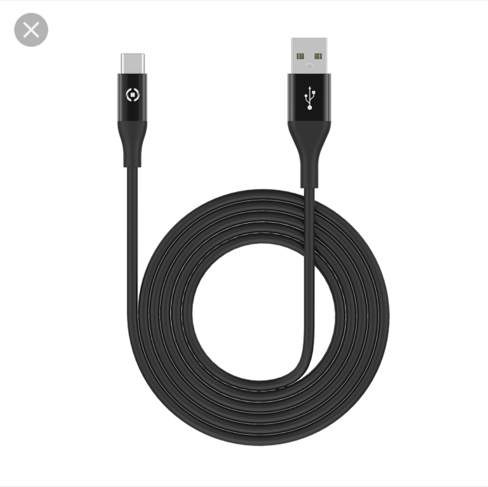
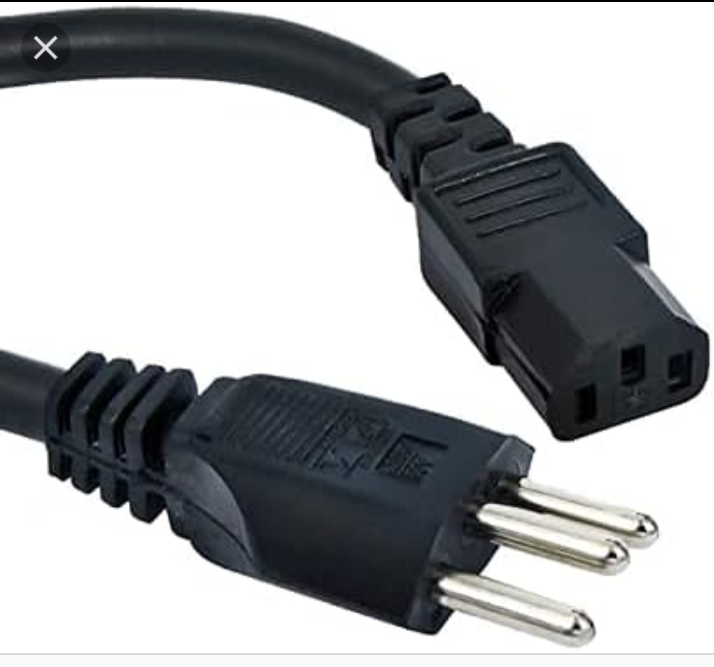
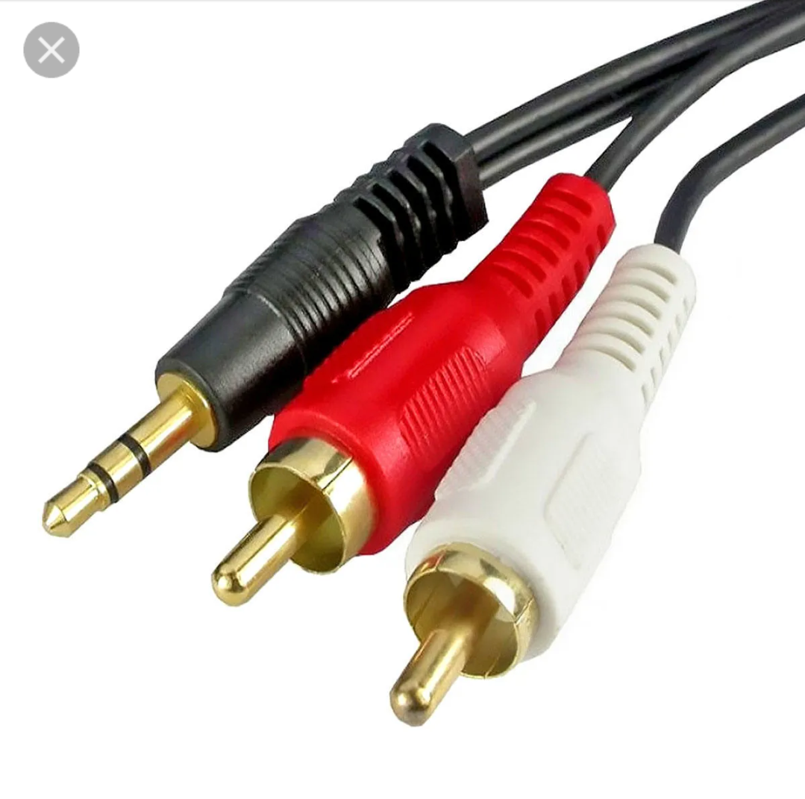

Tipos de Cabos da Placa Mãe
| Tipo | Descrição | Uso | Imagem |
|---|---|---|---|
| Cabo SATA | Cabo fino e achatado. | Transmite dados entre a placa mãe e dispositivos de armazenamento. |  |
| Cabo USB | Cabos com múltiplos pinos para conexões internas. | Conectam portas USB frontais ou dispositivos internos à placa mãe. |  |
| Cabo de energia ATX | Cabos de 24 pinos (placa mãe) e 4/8 pinos (CPU). | Fornecem energia à placa mãe e ao processador. |  |
| Cabo de Áudio | Conectores HD Áudio ou AC'97. | Ligam o painel frontal de áudio do gabinete à placa mãe. |  |